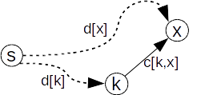

Algoritmul lui Dijkstra
Algoritmul lui Dijkstra determină pentru un nod dat într-un graf orientat cu costuri costurile minime ale drumurilor care au acel nod ca extremitate inițială.
Mai precis, pentru un nod s, algoritmul determină pentru orice nod x costul minim al unui drum de la s la x.
Strategia algoritmului lui Dijkstra este una de tip Greedy:
- se menține un tablou D, în care D[x] reprezintă costul minim curent (eventual infinit) al unui drum de la s la x;
- se menține o mulțime F de noduri k pentru care s-a determinat costul minim final D[k]
- inițial în F se adaugă doar nodul s, pentru care D[s] = 0. Pentru nodurile x adiacente cu s, D[x] = C[s, x], unde C[x, y] este costul arcului (x, y), iar pentru celelalte noduri costul D[ ] se inițializează cu INFINIT;
- în mod repetat:
- alegem un nod din afara mulțimii F, nodul k pentru care costul drumului D[k] este minim și finit;
- adăugăm nodul găsit k în F;
- pentru fiecare arc (k, x) cu x din afara mulțimii F stabilim dacă acest arc se îmbunătățește costul D[x] (arcul relaxează drumul); 
- alegerea acestor noduri se termină când toate nodurile au fost adăugate în F (s-au determinat costurile drumurile de la s la fiecare nod al grafului) sau când nu mai există noduri x din afara mulțimii F pentru care D[x] este finit;
Exemplu:
Pasul 0:

Pasul 1:

Pasul 2:

Pasul 3:

Pasul 4:

Pasul 5:

Implementare C++
#include <bits/stdc++.h>
using namespace std;
ifstream fin("dijkstra.in");
ofstream fout("dijkstra.out");
using PI = pair;
using VP = vector;
using VVP = vector;
using VI = vector;
const int inf = 0x3f3f3f3f;
int n, p;
VVP g;
VI d;
void Read_Data();
void Dijkstra(int x, VI& d);
int main()
{
Read_Data();
Dijkstra(p, d);
for (int i = 1; i <= n; ++i)
{
if (d[i] == inf)
fout << "-1 ";
else
fout << d[i] << " ";
}
return 0;
}
void Dijkstra(int x, VI& d)
{
d = VI(n + 1, inf);
priority_queue<PI, VP, greater<PI>> q;
d[x] = 0;
q.push({0, x});
int y, dist, w;
while(!q.empty())
{
tie(dist, x) = q.top();
q.pop();
if (dist > d[x])
continue;
for (auto& p : g[x])
{
tie(y, w) = p;
if (d[y] > d[x] + w)
{
d[y] = d[x] + w;
q.push({d[y], y});
}
}
}
}
void Read_Data()
{
fin >> n >> p;
int x, y, w;
g = VVP(n + 1);
while (fin >> x >> y >> w)
g[x].emplace_back(y, w);
}